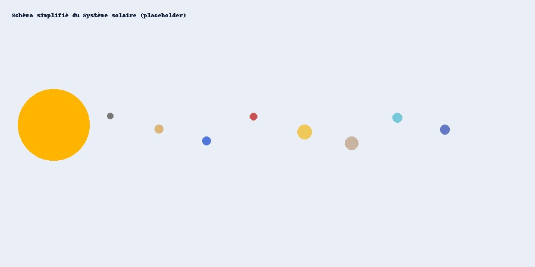

Données des planètes

| Planète | Diamètre (km) | Distance du Soleil (10⁶ km) | Lunes | Type |
|---|---|---|---|---|
| Mercure | 4 879 | 57,9 | 0 | Tellurique |
| Vénus | 12 104 | 108,2 | 0 | Tellurique |
| Terre | 12 742 | 149,6 | 1 | Tellurique |
| Mars | 6 779 | 227,9 | 2 | Tellurique |
| Jupiter | 139 820 | 778,3 | 95 | Gazeuse |
| Saturne | 116 460 | 1 433,5 | 146 | Gazeuse |
| Uranus | 50 724 | 2 872,5 | 28 | Glace/gazeuse |
| Neptune | 49 244 | 4 495,1 | 16 | Glace/gazeuse |
| Total : 8 planètes | ||||